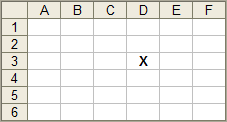
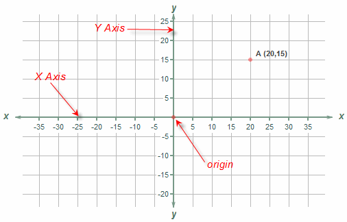

Recall that a plane is a flat surface that goes on forever in both directions. If we were to place a point on the plane, coordinate geometry gives us a way to describe exactly where it is by using two numbers.

To introduce the idea, consider the grid above. The columns of the grid are lettered A,B,C etc. The rows are numbered 1,2,3 etc from the top. We can see that the X is in box D3; that is, column D, row 3.D and 3 are called the coordinates of the box. It has two parts: the row and the column. There are many boxes in each row and many boxes in each column. But by having both we can find one single box, where the row and column intersect.
In coordinate geometry, points are placed on the "coordinate plane" as shown below. It has two scales - one running across the plane called the "x axis" and another a right angles to it called the y axis. (These can be thought of as similar to the column and row in the paragraph above.) The point where the axes cross is called the origin and is where both x and y are zero.

On the x-axis, values to the right are positive and those to the left are negative.
On the y-axis, values above the origin are positive and those below are negative.
A point's location on the plane is given by two numbers,the first tells where it is on the x-axis and the second which tells where it is on the y-axis. Together, they define a single, unique position on the plane. So in the diagram above, the point A has an x value of 20 and a y value of 15. These are the coordinates of the point A, sometimes referred to as its "rectangular coordinates". Note that the order is important; the x coordinate is always the first one of the pair.
For a more in-depth explanation of the coordinate plane see The Coordinate Plane.
For more on the coordinates of a point see Coordinates of a Point
If you know the coordinates of a group of points you can: